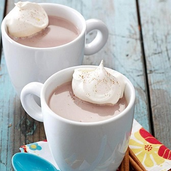

This delicious, not-too-sweet hot chocolate is richly flavored and delicately seasoned with spices.

Ingredients:
1/4 cupbaking cocoa
2 tablespoonsbrown sugar
1 cupboiling water
2 teaspoonsGustus Vitae spicy chocolate cinnamon cane sugar
Dashground cloves or nutmeg
3 cupsmilk
1 teaspoonvanilla extract
Whipped cream
Whole cinnamon sticks
Directions:
In a small saucepan, mix cocoa and sugar; stir in water.
Bring to a boil. Reduce heat; cook 2 minutes, stirring constantly.
Add spicy chocolate cinnamon sugar and cloves; stir in milk.
Simmer 5 minutes (do not boil). Whisk in vanilla.
Pour hot chocolate into mugs; top with whipped cream.
Use cinnamon sticks for stirrers.